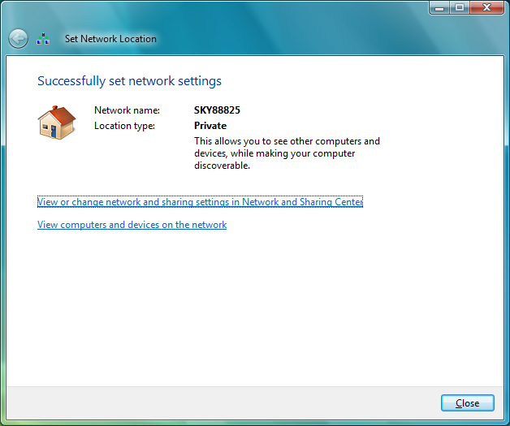

Connecting your PC wirelessly - Windows Vista
To connect your PC wirelessly to the Sky wireless router, follow the steps below.
-
Click on the Start button and select Connect to.

-
The Connect to a network window will open. The Sky wireless router wireless network should appear in the list of available networks. You can find the name of your wireless network on the bottom of the Sky wireless router, as well as on the Wireless Network Settings card included with your Sky wireless router and set-up guide. The name of your wireless network will be 'SKY' plus five numbers - for example: SKY12345.
-
Double-click the name of your wireless router to connect.

-
As the connection is configured with WPA-Personal encryption, a window will appear asking for confirmation of the network key before the PC will be able to connect.
-
The network key is printed on the bottom of the Sky wireless router and on the Wireless Network Settings card. Enter this into the box. Finally, click Connect.
-
You will see the screen below for a few seconds as your PC attempts to connect to the wireless network.

-
Once your PC has connected to the wireless network you will see the screen below. If you want your PC to connect to the same network each time it is restarted without having to insert the network key, tick both of the boxes and click Close.

-
If this is the first time you have connected to this wireless network, you will be asked to choose a location of the network. Click on the Home box.

-
You will see the screen below, confirming that the wireless network has been configured as a private home network on your PC. Click Close.
